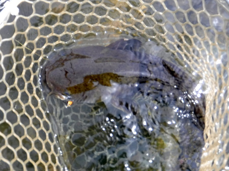
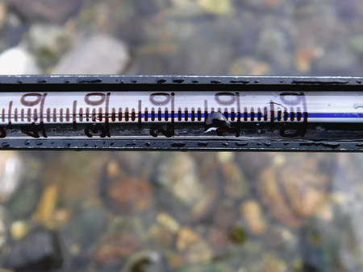
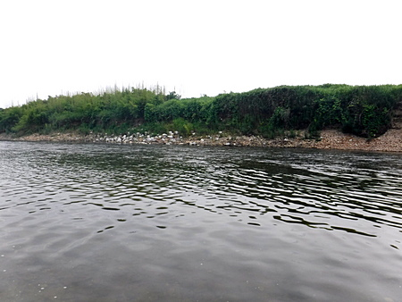
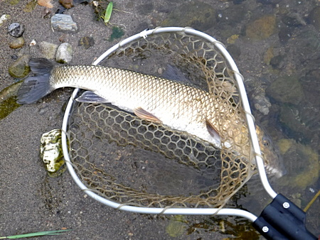
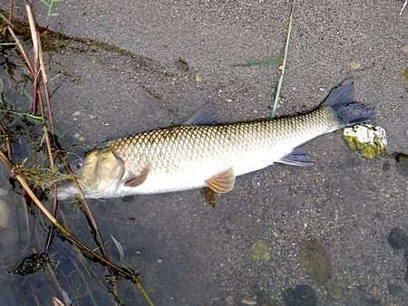

釣行日誌 故郷編
2020/06/27 流芯から珍しいお客さん
朝の雨が小降りとなり、昼からはところどころで雲間に切れ目が出来てきた。顔を見せた青空に誘われて、いそいそと支度をする。
カブの前部キャリアにルアー用２ピースロッドをベルトとタイバンドで固定し、後部荷台には、チェストポーチとウェストバッグを詰めた防水バッグなど一式の商売道具を積んでいざ出発。
今日は１番遠くのポイントを攻めてみたかったが、夕食までには帰らないとマズイので、近場を釣ることにした。
砂利の堤防道路に乗り入れ、身支度を整え、川原を目指す。しかし、オープンだった冬とは違い、雑草、イバラに覆われた堤防を、泳ぐようにして何とか川原まで降りる。
足音を忍ばせて、大淵のそばまで降りると、淵の溜りに、小さな鮎がきらめいている。他にもハヤのような小さな魚影がたくさん動いている。
『こりゃ、今日は期待できるかな？』
が、しかし。深みから瀬尻までまんべんなく攻めるが反応は無い。お目当てのニゴイはどこへ?
大淵から１つ下の荒瀬の流れ込みへと移動、鉄板ポイントである。重いウェストバッグを岸に置き、ペットボトルのお茶を飲んで一息つく。
『さぁて、勝負だ！』
瀬の頭からシンキングミノーで底を探り始める。
５投目くらいで、荒瀬の流芯脇を潜っていたラパラCD-7 のレインボートラウトカラーに、ガクンッとショックがあった。
「ヒット！」
『いやぁ、夏のニゴイは良く引くなぁ！』
などと思わず笑みをこぼしながらドラグを調整する。けれど、いつもなら、ややきつめに締めたドラグでこらえていればそのうち寄ってくるニゴイが、いつまでたっても上がってこない。
『これは、よほどの大物か？』
苦労しつつ、ようやく寄せてきたものの、いつもの黄金色をした三角の尾ビレが見えない。突如として水面に出たのは、黒褐色の丸い頭！
「うわっ！！ ナマズだぁ！」
ネットがなかったら、素手で扱うはめになるところだった。よいしょっ！とすくい上げて、百円ショップのラジオペンチでシングルフックを外す。

しかし、あんな流れの速い場所で昼間っからナマズが出るとはなぁ....？ 今日は増水気味で、おまけに流れには小魚がいっぱい居るので、フィッシュイーターたちは貪欲になって活性が上がっているのかもしれなかった。
水温を測ってみると、何と 25度。冬場の水の冷たさが嘘のようである。まるでお風呂！

しばらく釣り下ってみたものの、本命のニゴイも、再びのナマズの挨拶もなかったので、別のポイントへと移動することとした。
排水路脇の小径を降りてゆく。昨夜の雨の影響か、若干、渡るには注意が必要なくらい増水気味なので、慎重に、新規作製したウェーディングスタッフを頼りに対岸へ渡渉する。
さて、またまた重い装備を降ろし、身軽になって、慎重に、浅瀬から、ラパラのジョイント・フローティングミノーで探ってゆく。
浅場では反応が無かったので、深みは底をシンキングでベタ引きで探索してみる。

『ここら辺りで出るはずだが....』
と思っていると、急にロッドが重くなり、待望のヒット！
グングンと引いてラインを引き出してゆく。まぁ、何と言ってもニゴイなので、めちゃくちゃな暴れかたではない。ところが、寄せてきて、人影を見たら再び猛ダッシュして、10mほどラインを引っ張り出した。なかなか大きい。
しっかりと、安全に寄せて、ぐいっとネットですくいあげると、今度は狙っていた大物ニゴイだった。嬉しくなって、思わず何枚も写真を撮してしまった。（笑）


さらに釣り下ってゆくと、比較的浅いところで再びヒット！ はるか彼方で、例の黄金色の尾っぽが水面を割る。しかし、何となく軽い感触なので、こりゃ、バレるかな？ と心配していたらやっぱりバレた。（泣）
フッキングが浅かったようだ。未練がましく、その後も10投くらいしつこく粘ったが、さすがに鈎掛かりしたニゴイはもうルアーを負わなかった。残念だったが、夕食を作ってくれる人を待たせては悪いので、この辺でキリにする。
帰り道、油断して、何気なく浅瀬を渡っていると、何か足下に居た生き物を驚かせたらしく、三角波を立てて大物が上流へ逃げていった。
『あっ！ しまった！ 今のは何だ？？』
じっと足を止めて観察していると、上流の浅場で黒色の尾ビレが水面から突き出てユラユラしている。
『ニゴイか、鯉か？』
瀬には小魚の群れ。おそらくそれを狙っていたのか？ 今度はフローティングミノーで勝負だ...とつぶやきつつバイクに戻り、午後４時４５分に店じまいして帰途につく。
つくづく、カブは偉大だ！ と感心し、この名車を創り出した本田宗一郎氏の偉業に敬服しながら、エンジン音も誇らしげな 50cc にまたがって、梅雨晴れの堤防道路を走った。
釣行日誌 故郷編 目次へ
サイトマップ
ホームへ
お問い合わせ